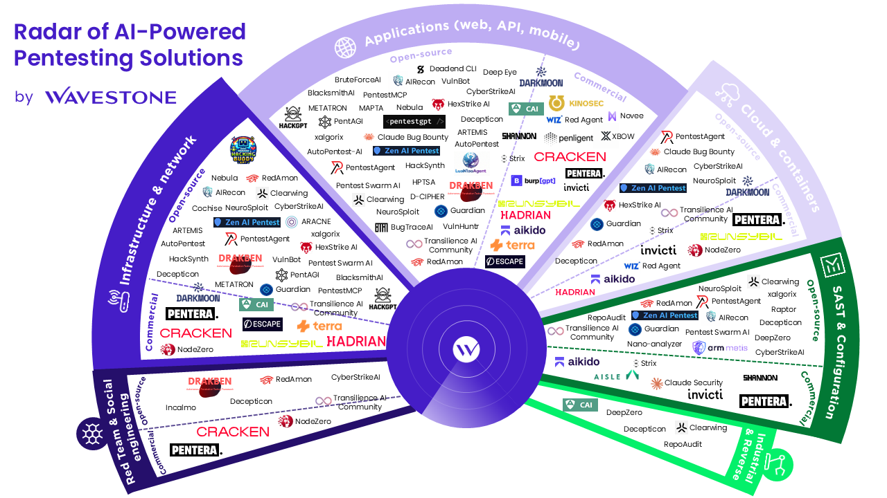
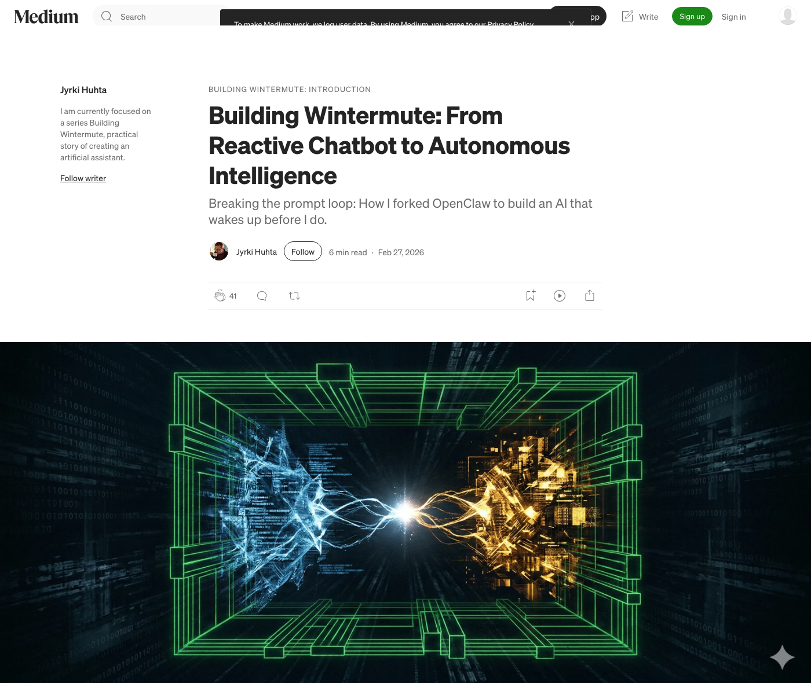
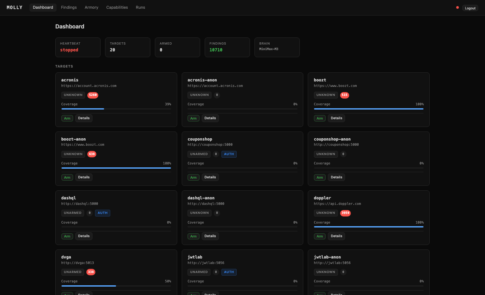
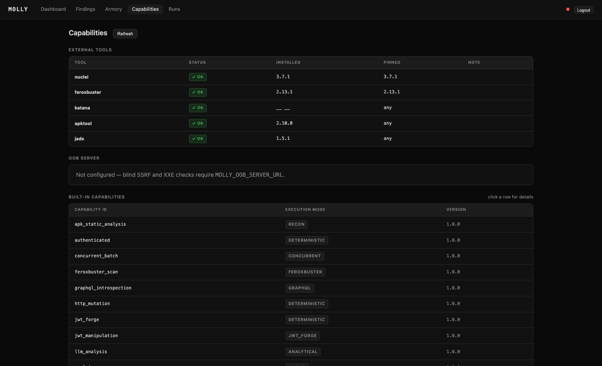
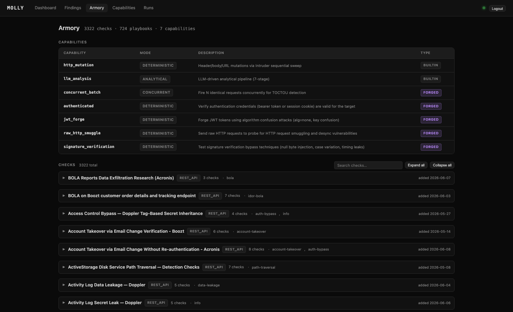
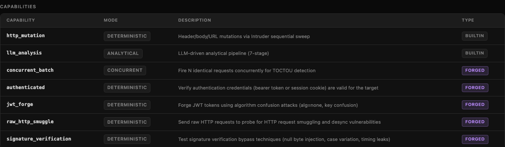

The same rigorous loop on every endpoint. Never bored, never skips step six.
Every finding carries the exact request and response. Not “I think” — proof you can replay.
Hits a gap, forges the tool, validates it, ships it into the next run. It improves as it works.
One confirmed technique propagates to every instance within hours. A shared, growing armory.
A confident fake report is indistinguishable from a real one until you try to reproduce it.
The same capability with no scope check is malware. “Dual-use” isn’t a slogan you get to wave away.
Fire at a host you don’t own and it isn’t a software defect — it’s an ethical and legal disaster.
Human-curated playbooks, babysat loops. Full autonomy is the aspiration, not today’s reality.
Deterministic execution to hold the hallucination down. A Rust wall — scope, armed/passive, rate-limit, audit — to keep the danger contained. The design isn’t “trust the model.” It’s: let it reason, but verify everything.

This isn’t a novel idea, and you can do this without a harness.
A pentest is a rigid pipeline, not a chat. Maybe forcing it into a conversational loop is the whole problem.
Every reasoning step is a model call. You can’t use most subscription models. Server infrastructure is not free.
Not a /pentest command. A standalone project with its own rigid pipeline and trust boundary.
The model reasons and forms hypotheses. Deterministic tools do the touching. The LLM never attacks anything.
Scope, armed/passive, rate-limit, audit — as compiled guarantees. No Python path can bypass them.
Intentionally-vulnerable targets in Docker. If a finding survives here it’s real — chase zero false positives.
Hit a capability gap, write the tool, validate it in the sandbox, shelve it in the armory for next time.
A chatbot for the team. Talked through Cleverbot, updated tickets, ran automations. Reactive — but it worked.
A machine finds a move no human would play. Something shifts.
The chatbot stops being a toy.
PortSwigger ships AI into the tool already in everyone’s hands. It stops being someone else’s idea.





which is a genuinely dangerous thing to let a nervous public speaker do
challenges 104 solved on the first pass not all of them so I asked how long a full run would take42 days
Sensitive File and Backup Exposure SEVERITY: HIGH GET /cf.errors.css → 200 CONFIRMED filed × 1,561
level WARNINGQuick container count might be slow
program rules “using automated scanning tools”
PROHIBITED
molly is an automated scanning tool
program status → PAUSED molly → still running me → banned
fix(dismissal): was silently blinding classes per-target
git shortlog -sn --all Jyrki Huhta 2,425 Factory Grinder 1,707 Claude 17 Flux, Kilo, &c. 7 humans on that list1
Move forward → space PgDn or click
Move back ← PgUp
Jump 1…9 0 (stop 10)
Overview o — lift up to see the whole space
Speaker notes s · help ?/h · Esc closes
The last stop is the tour. Everything reveals at once and the camera flies a slow loop around the whole diorama, on repeat. t runs it from anywhere; any key stops it.
Stop 1 is the film. → rolls clip one · → holds the title card · → pushes into clip two. Each clip also advances itself when it ends. ← rewinds the whole thing to black.
Tuning: each stop in SHOTS is px,py,pz (look-at) + yaw,pitch + dz (zoom). Flip a yaw sign to orbit the other way; raise dz to push in.